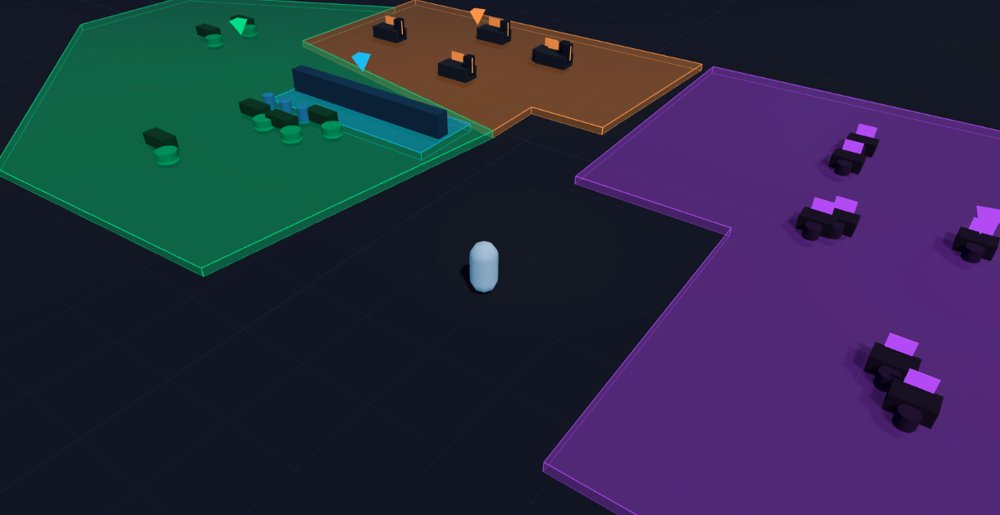

Un mismo lugar,
tres formas de quedarte.
NODO conecta una barra de café, un taller de armado de computadoras y una zona de gaming en un solo espacio pensado como un sistema, no como tres locales pegados con cinta.

No queríamos elegir entre bar, taller y ciber. Así que hicimos los tres.
NODO nació de una pregunta simple: ¿por qué el lugar donde armás tu PC, el lugar donde jugás y el lugar donde tomás un café mientras esperás siempre están separados? Diseñamos un espacio único donde las tres cosas se cruzan.
Antes de construir una sola pared, modelamos el espacio en bloques: probamos circulación, distancias entre zonas y puntos de cruce en versiones digitales del local, como el boceto que ves arriba. Cada zona tiene su propia identidad, pero comparten un mismo piso, un mismo horario y el mismo mostrador de entrada.
Podés dejar tu PC en el taller y cruzar a jugar mientras la arman. Podés pedir un café sin perder tu turno en la zona ciber. El sistema —turnos, mesas, estaciones— está pensado para que las tres áreas se comuniquen entre sí, no para que compitan por tu atención.
Cada zona es su propio negocio, con su propia página
Tocá un recuadro para entrar a la experiencia completa de esa zona: su propuesta, su sistema de turnos y sus tarifas.
Café Zócalo
La barra que conecta todo. Pedís, esperás y volvés a lo tuyo sin perder el lugar.
- Mesas asignadas por mejor ajuste
- Cola de preparación en barra
- Cuenta y turno enlazados a tu mesa
Byte & Tornillo
El taller donde arman tu PC a la vista, con pruebas de estrés y garantía escrita.
- Ensamble en mesa antiestática
- Pruebas de estrés antes de entregar
- Factura desglosada por componente
Zona Ciber
Estaciones gamer con planes por hora, torneos y estado de las máquinas en vivo.
- Estaciones libres / ocupadas en vivo
- Planes por hora y por bloque
- Torneos y eventos semanales
Un recorrido, no tres visitas separadas
Así se mueve alguien por NODO en una tarde cualquiera.
Deja el equipo en el taller
Entra un pedido de armado o de mantenimiento. Queda un turno abierto a su nombre.
Cruza a jugar mientras espera
Toma una estación libre en la zona ciber. El turno del taller sigue corriendo en paralelo.
Pide un café en la barra
El pedido entra en la cola de la barra. Cuando el equipo está listo, avisan a la mesa.
Un solo horario para las tres zonas
- Lunes a viernes09:00 — 23:00
- Sábados10:00 — 01:00
- Domingos11:00 — 22:00
- Zona armado — recepción de equiposhasta 20:00
Contanos qué buscás
Dejá tu mensaje y te contactamos para coordinar tu visita o tu pedido de armado.